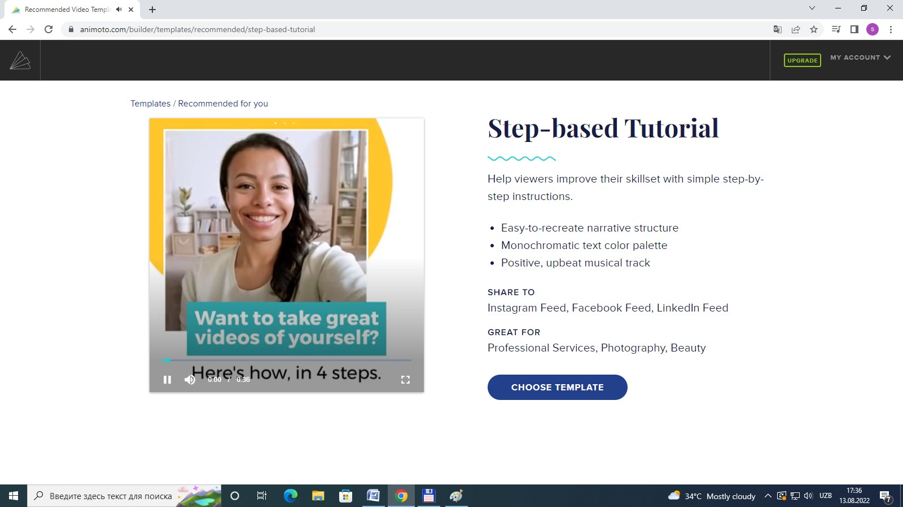
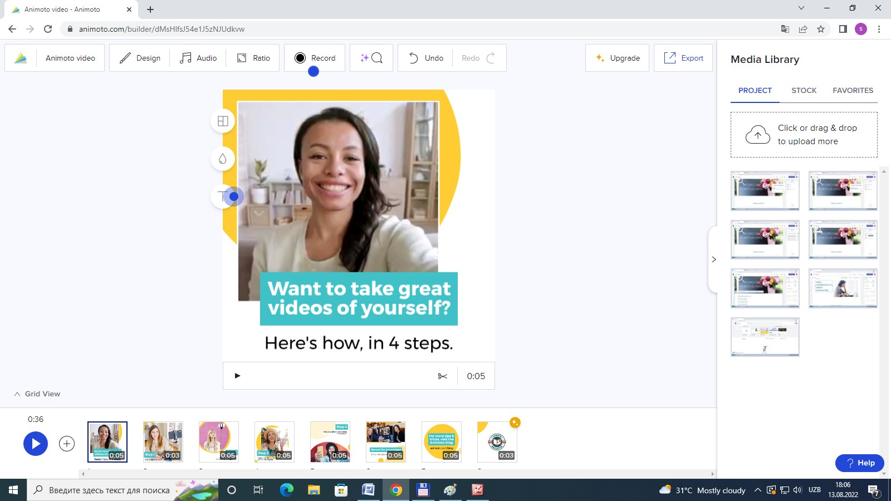

Animoto - video jaratıw servisı bolıp, ol rejissyorlik hám redaktorlaw funksiyaların, sonıń menen birge, videonı avtomatikalıq túrde jaratıw ushın muzıka hám fotosúwretlerdi analiz qılıw múmkinshiligin usınıs etedi. Sistema internette isleydi hám qosımsha plaginlerdi názerde tutadı, iPad hám iOS hám Android tiykarındaǵı smartfonlar ushın versiyalardı usınıs etedi. Facebook, Twitter hám Pinterest penen integraciya sebepli tayın materiallardı social tarmaqlarda jaryalawǵa hám kóriwge boladı.
15-TEMA
ANIMOTO.COM SAYTINDA WEB-BET (PEDAGOG PORTFOLIOSIN) JARATIW VIDEO ROLIGIN TAYARLAW.
Platforma social tarmaqlar ushın kontent tayarlaw, SMM-qánigeleri(SMM (social media marketing) - bul marketing bolıp, onıń maqseti klientlerdi tartıw, ustap turıw jáne social tarmaqlarda satıw bolıp tabıladı.) reklama rolikleri hám slayd -shoulardı jaratıw, sonıń menen birge, marketologlarǵa reklama roliklerin hám slayd -shoulardı jaratıwda járdem beredi. Bayramlar hám belgili waqıyalar, qutlıqlawlar menen shańaraqqa tiyisli filmlerdi redaktorlaw ushın puqaralar paydalanıwı múmkin. Platforma multimedialı fotoreportajlar, prezentaciyalar hám statistikalıq maǵlıwmatlar, programma daǵazaları hám reklama videoların jaratıw ushın isletiledi.
Dizimnen ótiw ushın siz Facebookdegi akkauntıńız arqalı yamasa pochta adresin kirgiziw arqalı kiriwińiz múmkin; elektron pochta arqali tastıyıqlaw talap etilmeydi. Soft sizge shaxsıy úskeneńizden muzika hám fonlardı júklew yaki bibliotekadaǵı shablonlardan paydalanıw imkaniyatın beredi. Siz Flickr, Facebook, Photobucket, Picassa hám Instagram social tarmaqlarınan fotosuratlarni úwretlerdi júklewińiz múmkin. Eger sizde ózińizdiń túsirgen materialıńız bolmasa, siz Animoto maǵlıwmatlar bazasınsaǵı video roliklerden paydalansańız boladı, bunda barlıq fayllar tematikası boyınsha klassifikaciyalanǵan.
Mısalı: Web-bet (pedagog portfoliosın) jaratıwdı úyretiwshi video rolik. Bizge Animoto.com bos tayar shablonlar dizimin usınadı(1-súwret)
15.1-súwret Animoto.com tárepinen usınılǵan shablonlar dizimi
Tayar shablonlar ishinen Step-based Tutorial shablonın tańlap alıp
15.2-súwret Step-bdased Tutorial shablonı
Kiremiz bul Choose Template túymesi arqalı ámelge asırıladı. Upload photos and videos to start customizing this template aynashası payda boladı. Biz bunda ózimizge tiyisli bolǵan materiallarımızdı kirgiziwimiz tiyis, Bunıń ushın Click or drag & drop to upload media túymesi járdeminde ámelge asırıladı.( 73-súwret)
15.3-súwret Upload photos and videos to start customizing this template aynashası
Proekt ushın zárúr bolǵan júklep alǵan materiallarıńız Project aynasında jaylasadı.
15.4-súwret Kerekli materiallardı júklep, bloklar ústinde islewdi baslaw
Joqarıda jaylasqan instrumentler panelinde jaylasqan Animoto videonıń ornına ózińizdiń video rologińizdiń atın kiritiń. Designǵa kirip dizaynlar diziminen Healthy life tańladıq. Audioǵa kirip Fun ǵa kirip You are sunshine vokalın tańladıq.Ratioǵa kirip Square 1:1 ,bunnan bloklarımızdıń formasın tańladıq. Record járdeminde biz ekrandaǵı bolıp atırǵan processti jazıp alıp roligimizge material sıpatında qossaq boladı. Commentte bolsa kommentariya beriwdi sheklew yaki oǵan ruxat beriw ámelge asırıladı.Media Librarydan rolik ushın materiallar alsańız boladı. 4-súwrette 8 bloktan paydalanıp atırǵanımızdı kórseńiz boladı. Sheńber ishinde + belgisi bar instrument arqalı videoǵa blok qosıladı. Oń tárepte joqarıda jaylasqan Export videonı kerekli formatta júklep alıwıńız(bul tek pullı versiyasında ámelge asadı) yaki jaqarıda aytıǵan social tarmaqlarǵa qoyıwıńızǵa boladı.
15.5-súwret Tayar bolǵan Web-bet (pedagog portfoliosın) jaratıwdı úyretiwshi video roligin aldınnan kóriw processi
Sistema videonı jumısshı formatqa ózgertedi, sonnan keyin atı menen táriypleniwi qosıladı, kórinisi tańlanadı. Instrumentler paneli ob'ektlerdi aylandırıw, nusqalaw, óshiriw hám olarǵa arnawlı effektler qosıw imkaniyatın beredi. Ilhamlandırıw ushın servis saytında hár túrli tayın proekler usınıs etiledi.
Soraw hám tapsırmalar
1. Animoto bul qanday servis?
2. Animoto.com tárepinen usınılǵan shablonlar dizimi
3. SMM-qánigeleri bular
4. Platforma qanday maqsetlerde isletiledi
5. Soft sizge qanday imkaniyatlardı beredi